Free Phonics Worksheets You Can Print Today
Twenty-two free printables from my phonics, reading, grammar and math packs, from kindergarten word families to making inferences, main idea, subject and predicate, complete sentences, FANBOYS, run-on sentences, prefixes and suffixes for older readers, plus rounding for third grade math, a working memory lesson for executive functioning and an asking for help lesson for self-advocacy. The samplers are real pages from the full pack, not a watered-down preview, and each one teaches one skill at a time.
The downloads are hosted on Teachers Pay Teachers. They are free; you only need a free TPT account to download.
Pick the One That Fits Your Reader
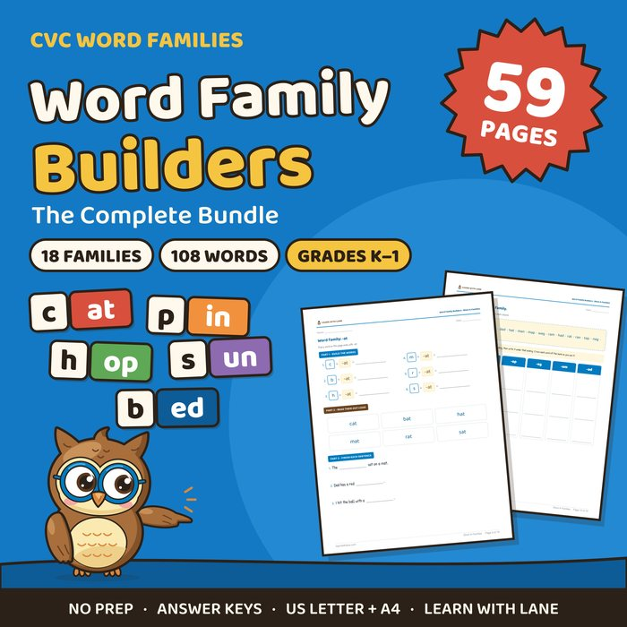
CVC Word Families: -at, -an, -ap
For a child who knows letter sounds and is starting to blend them into words.
- Build six words in each family
- Read them out loud
- Finish three sentences per page
- Answer key included
Full pack: 18 word families, 59 pages
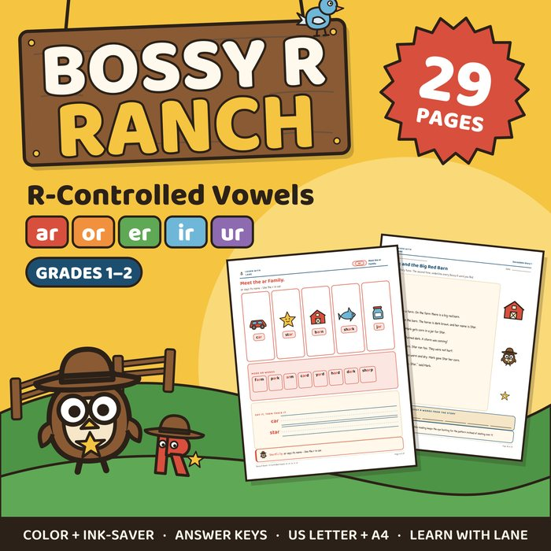
Bossy R: R-Controlled Vowels
For a child who reads short-vowel words and is ready for ar, or, er, ir and ur.
- The Bossy R rule page, to keep on the desk
- Meet the ar family: picture words to read and trace
- ar practice with sound boxes
- Answer key included
Full pack: all five patterns, 29 pages, two decodable stories

The Floss Rule: Double Consonants
For a child who spells hil and mes: the sounds are right, the double is missing.
- The Floss Rule page: three questions to ask
- Meet the ff words: picture words and sentences
- ff practice with sound boxes
- Answer key included
Full pack: ff, ll, ss and zz, 27 pages, two decodable stories
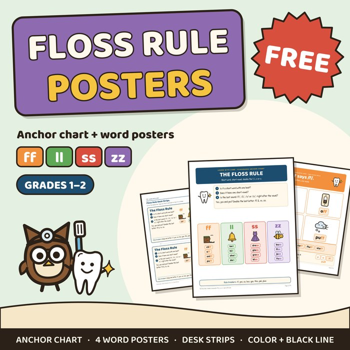
FLSZ Rule Posters: Floss Rule Anchor Chart and Word Posters
For the wall where students write. Three questions decide when the last letter doubles.
- The Floss Rule anchor chart, with a rule breakers box
- One word poster each for ff, ll, ss and zz
- Desk strips, two to a page
- Every page in color and in black line
Full pack: ff, ll, ss and zz, 27 pages, two decodable stories
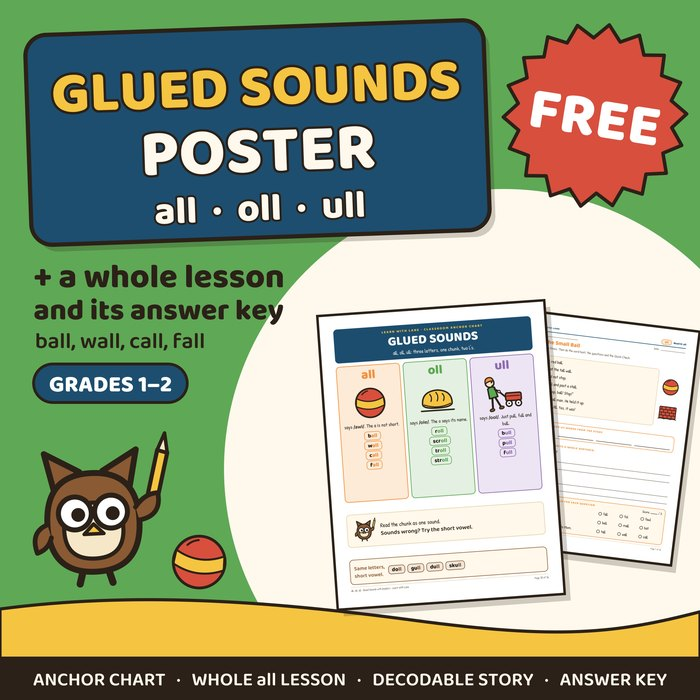
Glued Sounds Poster: all, oll, ull Anchor Chart and Lesson
For the reader who rhymes ball with pal. Three letters, one chunk, one sound box.
- Anchor chart: all, oll and ull, plus doll and gull
- The glued sounds desk page
- The whole all lesson and a decodable story
- Quick Check and answer key
Full pack: all oll ull worksheets, 36 pages, five decodable stories
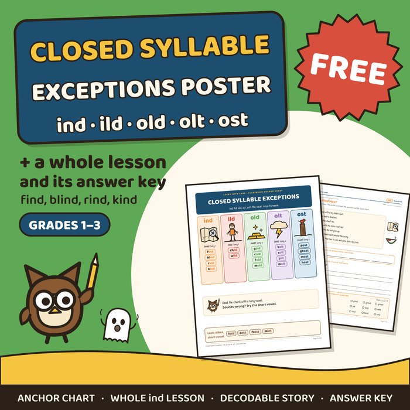
Closed Syllable Exceptions: ind, ild, old, olt, ost Anchor Chart and Lesson
For the reader who sounds out find with a short i. Five chunks where the vowel says its name.
- Anchor chart: ind, ild, old, olt and ost, plus the short look-alikes
- The five-chunk desk page
- The whole ind lesson and a decodable story
- Quick Check and answer key
Full pack: closed syllable exceptions worksheets, 42 pages, seven decodable stories
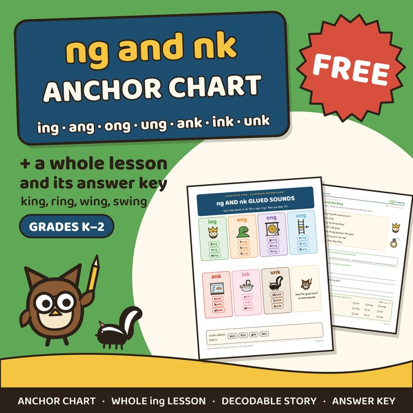
ng and nk Anchor Chart: ing, ang, ong, ung, ank, ink, unk and Lesson
For the reader who sounds out k-i-n-g letter by letter. Seven glued sounds, each read as one part.
- Anchor chart: the seven glued sounds, plus words that end in just n
- The seven-sound desk page: sing, sink or sin?
- The whole ing lesson and a decodable story
- Quick Check and answer key
Full pack: ng and nk worksheets, 49 pages, nine decodable stories

The ck Rule: ck or k?
For a child who spells bak and duk, or who writes ck everywhere once it is taught.
- The ck Rule page: three questions to ask
- Meet the ack words, then practice with sound boxes
- A short decodable story with a quick check
- Answer key included
Full pack: five ck word families and k alone, 43 pages, seven decodable stories
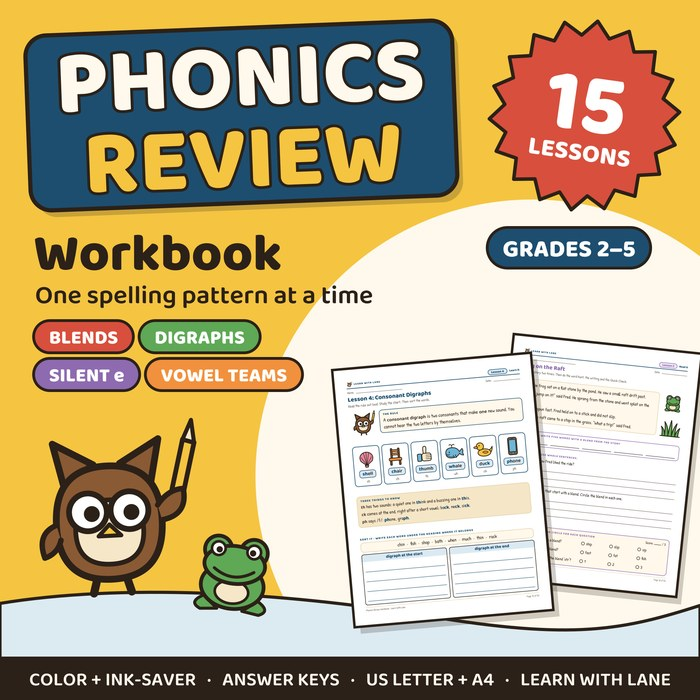
Compound Words: One Full Lesson
For a reader who stalls on long words: find the two small words inside.
- Rule chart with picture equations and a word sort
- Fill-in-the-blank and multiple-choice practice
- A short story with a word hunt and a Quick Check
- Answer key included
Full workbook: 15 phonics review lessons, 53 pages, color and ink-saver

Reading Intervention: Syllable Types, Prefixes, Fluency
For an older student who can read, but slowly, and stalls on long words.
- The six syllable types, with a practice page
- Prefixes dis- and pre-
- A timed repeated-reading passage with a chart
- Summarizing with SWBST
Full workbook: The Reading Playbook, 100 pages
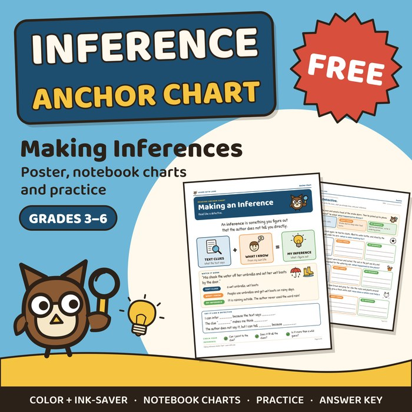
Making Inferences: Anchor Chart and Practice
For a reader who can retell a story but misses what the author leaves unsaid.
- Anchor chart in color and ink-saver: text clues + what I know = my inference
- Notebook charts with blanks, two to a page
- Three short practice texts and a short story with a Quick Check
- Teacher guide and answer key included
Full pack: Making Inferences in Short Stories, 12 stories, 42 pages
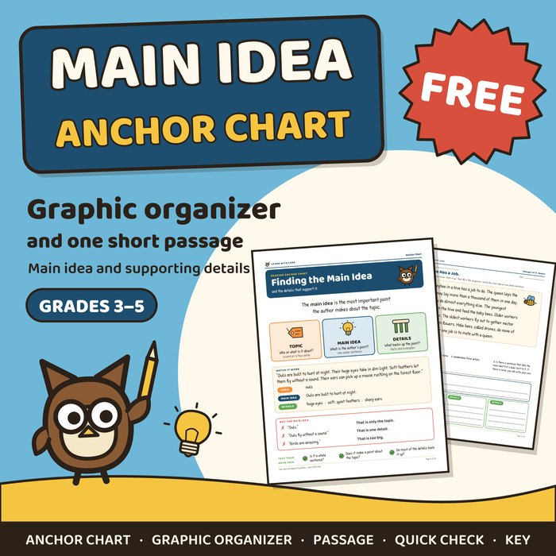
Main Idea: Anchor Chart, Organizer and Passage 1
For a reader who names the topic, or the most exciting fact, and calls it the main idea. (Some standards call it the central idea; it is the same skill.)
- Anchor chart: topic, main idea, details
- Every Bee Has a Job, a short passage with an organizer
- Three questions, a Quick Check, and an organizer for any text
- Answer key included
Full pack: Main Idea and Supporting Details, 12 passages, 42 pages
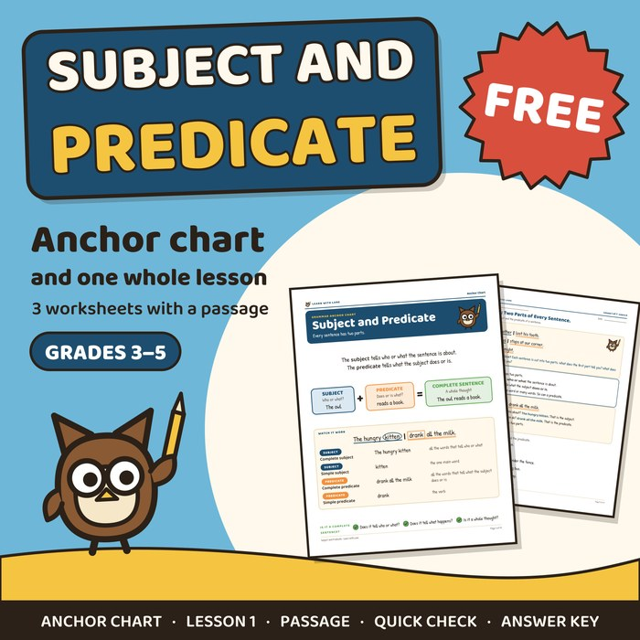
Subject and Predicate: Anchor Chart and Lesson 1
For a writer who cannot yet say where the subject of a sentence ends.
- Anchor chart: subject + predicate = complete sentence
- Learn It and Practice It: mark, match, then write
- Kite Day, a short passage with a Quick Check
- Answer key included
Full pack: Subject and Predicate, 7 lessons, task cards and a quiz, 41 pages
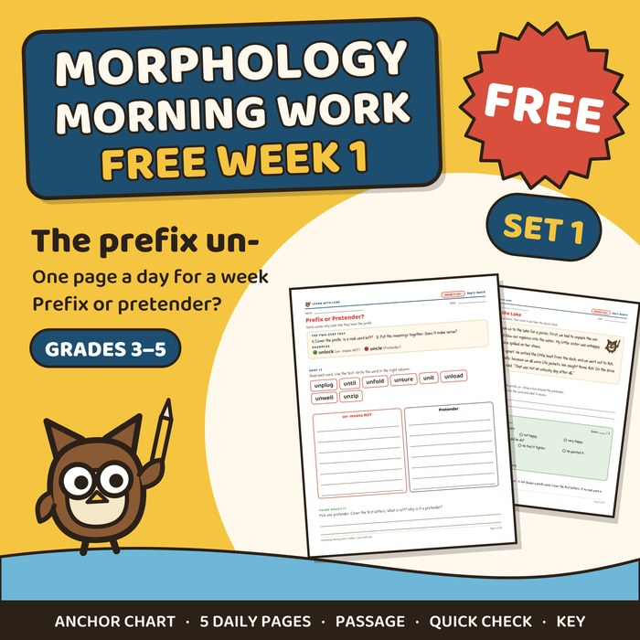
Morphology Morning Work: Week 1, the Prefix un-
For a reader who meets unkind, unfair and unsafe and reads each one as a brand-new word.
- One page a day for a week, about 10 minutes
- Prefix or pretender: uncle starts with un but has no prefix
- A short story with a 3-question Quick Check
- Anchor chart and answer key included
Full pack: Morphology Morning Work: Prefixes, 8 weeks, 55 pages
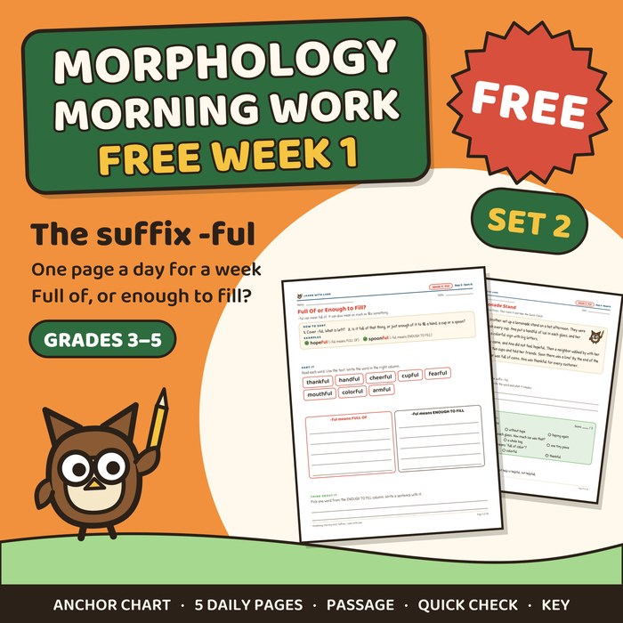
Morphology Morning Work: Week 1, the Suffix -ful
For a reader who knows the word full and writes helpfull, or reads handful as full of hands.
- One page a day for a week, about 10 minutes
- Full of, or enough to fill? A sort for the two meanings of -ful
- A short story with a 3-question Quick Check
- Anchor chart and answer key included
Full pack: Morphology Morning Work: Suffixes, 8 weeks, 55 pages
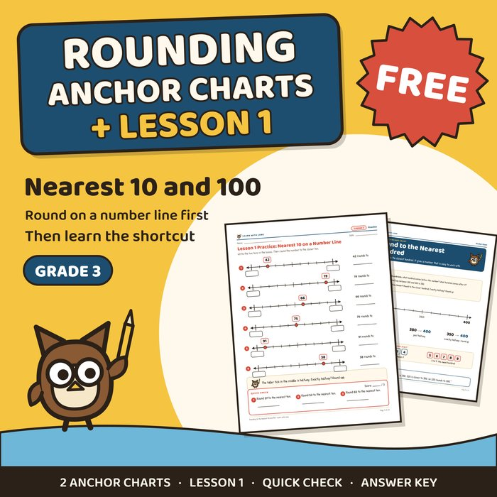
Rounding Anchor Charts and a Number Line Lesson
For a child who says 349 rounds to 400, or knows “5 or more” but not why.
- Two anchor charts: the nearest ten and the nearest hundred
- A full first lesson: find the two tens, find halfway, round
- Six number lines and a 3-question Quick Check
- Answer key included
Full pack: Rounding to the Nearest 10 and 100, 7 lessons, 27 pages
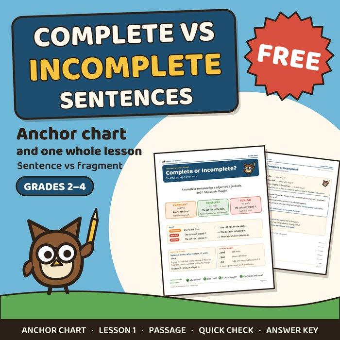
Complete vs Incomplete Sentences: Anchor Chart and Lesson
For a child who calls every long sentence a run-on and every short one a fragment. “Snow fell.” is complete.
- Anchor chart: fragment, complete sentence and run-on side by side
- A full first lesson: Who or what? Does what? A whole thought?
- A short piece of student writing with five fragments to find
- Answer key included
Full pack: Complete and Incomplete Sentences, 7 lessons, 41 pages
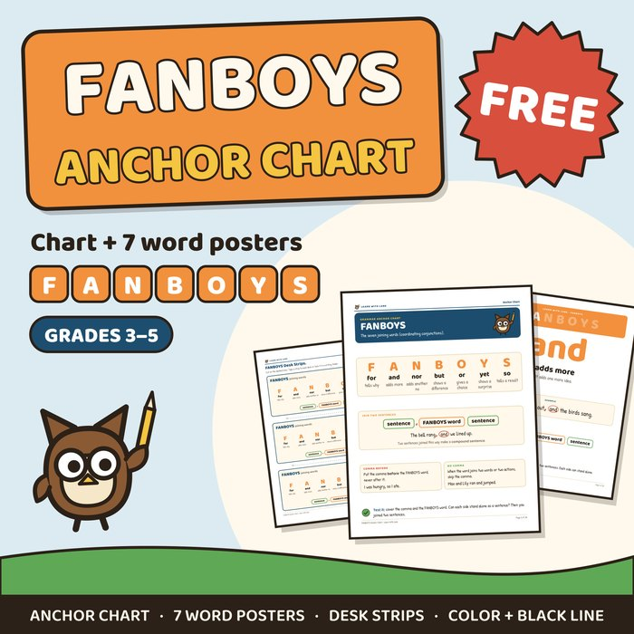
FANBOYS Anchor Chart and Word Posters
For the writer who knows the seven words by heart and still leaves out the comma. Each word gets its job: and adds, but shows a difference, so tells a result.
- FANBOYS anchor chart with the comma rule
- One poster each for for, and, nor, but, or, yet and so
- Desk strips, three to a page
- Every page in color and in black line
Full pack: Simple, Compound and Complex Sentences, 7 lessons, 41 pages
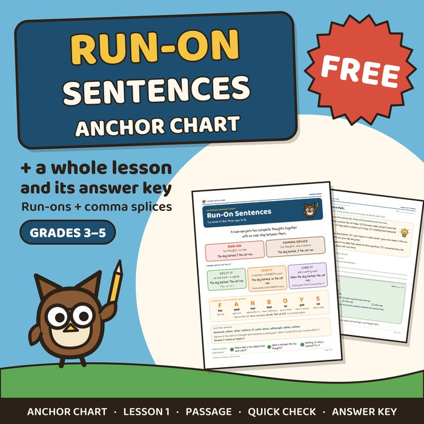
Run-On Sentences Anchor Chart and Lesson
For the writer who runs two thoughts together and cannot hear where it breaks. Find where the first thought ends.
- Anchor chart: run-on, comma splice and three ways to fix them
- A full first lesson with six sentences to try
- A short piece of student writing with three run-ons to find
- Answer key included
Full pack: Fixing Run-On Sentences, 7 lessons, 41 pages
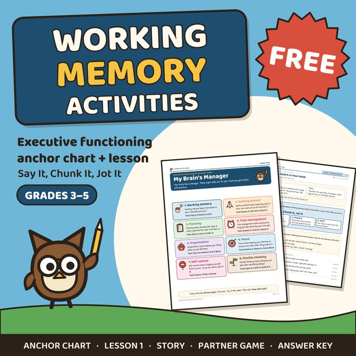
Working Memory Activities: Anchor Chart and Lesson
For the student who hears three directions and does one. A tool a child can say out loud: Say It, Chunk It, Jot It.
- Anchor chart: all eight executive functioning skills, with a tool for each
- A full first lesson on working memory, with a short story and Quick Check
- A Say It Back partner game, from two steps to four
- Answer key included
Full pack: Executive Functioning Curriculum, 8 lessons, 51 pages
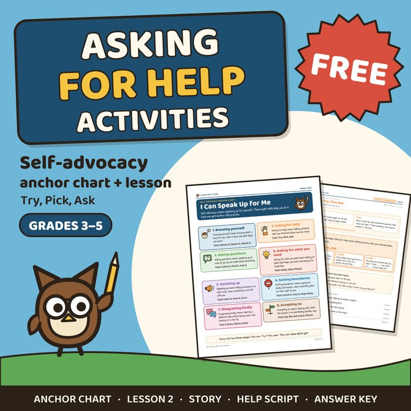
Asking for Help Activities: Anchor Chart and Lesson
For the student who sits stuck and silent until the bell. A tool a child can say out loud: Try, Pick, Ask.
- Anchor chart: all eight self-advocacy skills, with a tool for each
- A full lesson on asking for help, with a short story and Quick Check
- A help plan and a help script to practice out loud
- Answer key included
Full pack: Self Advocacy Lessons and Activities, 8 lessons, 51 pages
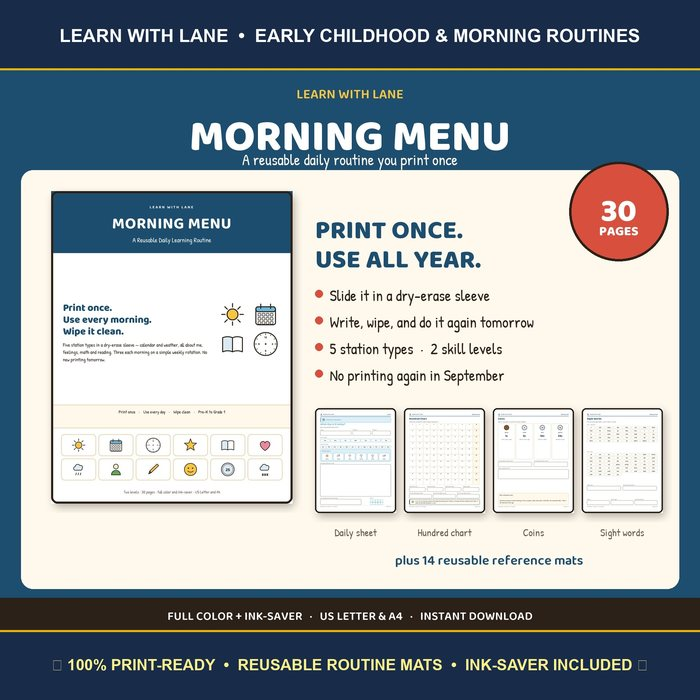
Morning Menu: Calendar and 100 Chart
For a short daily routine a young child can do with a dry-erase marker.
- Print once and slide into a dry-erase pocket
- Calendar page
- 100 chart page
Full binder: 30 pages in color and ink-saver
How These Worksheets Teach
One pattern at a time
Each page practices a single spelling pattern. Patterns are mixed only after each one has been taught on its own, so a child is never guessing between things nobody has shown them yet.
Sounds first, then spelling
Sound boxes ask the child to write one sound in each box. Two letters that make one sound, like the ff in cliff, share a box.
Built for a parent, a tutor, or a teacher
Every pack has an answer key and a short guide. You do not need training in a reading program to use them.
What order should I use them in?
CVC word families come first, then the floss rule (ff, ll, ss, zz), then ck or k, then r-controlled vowels. Syllable types and prefixes are for students who already read one-syllable words well.
The Full Packs
Every pack is a print-and-go PDF, with answer keys wherever there are answers to check.


Making Inferences & Main Idea Bundle
Two comprehension packs, 24 short passages, 84 pages, grades 3–5. Save 20%.
See the bundle
Morphology Morning Work Bundle
Prefixes, then suffixes: 16 weeks of one page a day, 110 pages, grades 3–5. Save 20%.
See the bundle
Morning Menu
A reusable morning routine: 5 daily stations at two levels and 14 dry-erase mats. 30 pages in color and ink-saver, Pre-K–1.
See the binder
all, oll, ull (Glued Sounds)
The glued sounds after FLSZ, plus doll and gull. 5 decodable stories, 36 pages, grades 1–2.
See the pack
Closed Syllable Exceptions
ind, ild, old, olt, ost: the vowel says its name, plus the short look-alikes. 7 decodable stories, 42 pages, grades 1–3.
See the pack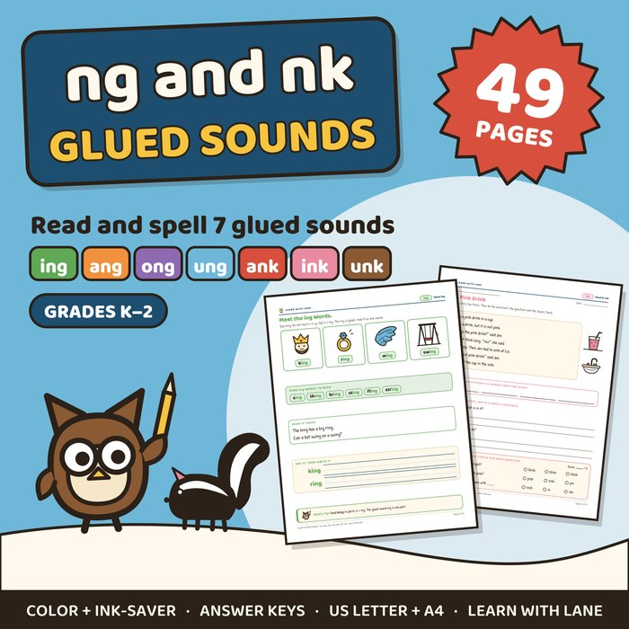
ng and nk Glued Sounds
ing, ang, ong, ung, ank, ink, unk, plus words that end in just n. 9 decodable stories, 49 pages, grades K–2.
See the pack
The Reading Playbook
100 pages of phonics, fluency and comprehension for older readers.
See the Playbook
Making Inferences in Short Stories
12 short stories with text evidence questions and a quiz. 42 pages, grades 3–6.
See the pack
Subject and Predicate
7 grammar lessons with passages, task cards and a quiz. 41 pages, grades 3–5.
See the pack
Main Idea and Supporting Details
Main idea (or central idea) and supporting details: 12 short nonfiction passages with graphic organizers and a quiz. 42 pages, grades 3–5.
See the pack
Morphology Morning Work: Prefixes
8 weeks of daily prefix practice with Friday passages and Quick Checks. 55 pages, grades 3–5.
See the pack
Morphology Morning Work: Suffixes
8 weeks of daily suffix practice with Friday passages and Quick Checks. 55 pages, grades 3–5.
See the pack
Rounding to the Nearest 10 and 100
7 number line lessons, a find-the-mistake page, a riddle and a unit check. 27 pages, grade 3.
See the pack
Complete and Incomplete Sentences
7 lessons on fragments and run-ons, 21 sort cards, 24 task cards and a quiz. 41 pages, grades 2–4.
See the pack
Executive Functioning Curriculum
8 skills from working memory to flexible thinking, each with a 3-step tool, a story and a Use It page. 51 pages, grades 3–5.
See the pack
Simple, Compound and Complex Sentences
7 lessons on FANBOYS, waiting words and the commas that go with them, 21 sort cards, 24 task cards and a quiz. 41 pages, grades 3–5.
See the pack
Self Advocacy Lessons and Activities
8 lessons on speaking up for yourself, from asking for help to saying no, each with a three-step tool and a script to say out loud, plus 24 task cards and a quiz. 51 pages, grades 3–5.
See the pack
Fixing Run-On Sentences
7 lessons on run-ons and comma splices and three ways to fix them, plus fragments vs run-ons, 21 sort cards, 24 task cards and a quiz. 41 pages, grades 3–5.
See the packWant help using them?
I'm David Lane, a certified teacher with 20+ years in the classroom. I tutor reading one-on-one, online and in person in the Texoma area. The first 30-minute lesson is free.